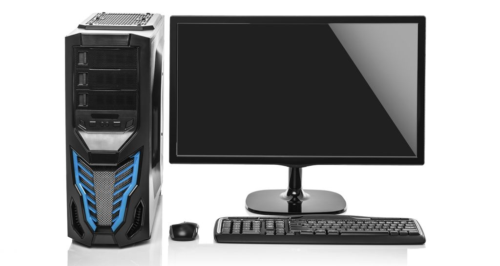

Reparación de PC
Realizamos diagnóstico, cambio de piezas, limpieza interna y formateo.

Todo sobre las Computadoras
Una computadora es una herramienta indispensable en el hogar y en el trabajo. Sin embargo, con el tiempo pueden aparecer fallos como lentitud, sobrecalentamiento o errores de sistema. La mayoría de estos problemas tienen solución rápida si se atienden a tiempo.
Problemas más comunes que atiendo:
- Lentitud extrema y pantallas de carga prolongadas.
- Virus, malware o software no deseado.
- Fallas en el disco duro o memoria RAM.
- Problemas con la tarjeta gráfica o sonido.
- Sobrecalentamiento por acumulación de polvo.
Consejos para prolongar la vida de tu PC:
- Realizar limpieza interna al menos una vez al año.
- Actualizar el sistema operativo y programas regularmente.
- Evitar instalar programas de dudosa procedencia.
- Usar un protector de voltaje para prevenir daños eléctricos.
- Hacer copias de seguridad de tus archivos importantes.
💡 Tip: Si notas que tu computadora está más lenta de lo normal,
podría necesitar una optimización o un cambio de disco a tecnología SSD para
mejorar su velocidad hasta 10 veces.